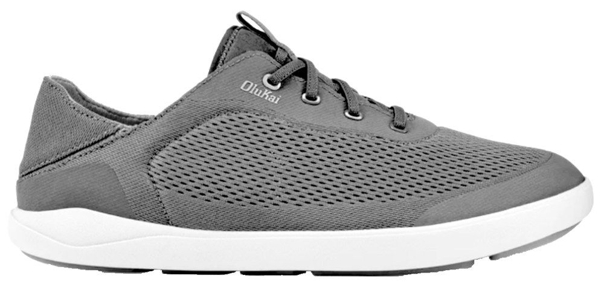

Visualization
Three studies of soft, with presence.
 (01) Wall discsThree textile-wrapped discs, soft shadows, no frame. A cabin door-card or acoustic panel idea, read from across the room and up close.Color: Sand Drift, 4253C, Arctic Dusk with a Verdigris fleck
(01) Wall discsThree textile-wrapped discs, soft shadows, no frame. A cabin door-card or acoustic panel idea, read from across the room and up close.Color: Sand Drift, 4253C, Arctic Dusk with a Verdigris fleck (02) Two soft formsA bolster and a dome, matte and sheened by the same light. Tests whether a form with no hard edge still holds attention.Color: Sand Drift and Smoky Amethyst
(02) Two soft formsA bolster and a dome, matte and sheened by the same light. Tests whether a form with no hard edge still holds attention.Color: Sand Drift and Smoky Amethyst (03) Cloth on the floorA single cloth let fall by simulation. Tests the quiet of folds with no pattern to compete.Color: Sand Drift
(03) Cloth on the floorA single cloth let fall by simulation. Tests the quiet of folds with no pattern to compete.Color: Sand DriftHow these were made
Built in Blender 5.3 (Cycles). Colors come from the working palette and WGSN FW2028. The weave is a generated texture with slub and heather speckle, a concept-stage stand-in for the fabric, not a scan of a real one. Lighting is one raking soft source and one cool fill, so the texture reads at the edges of each form.
Render and texture settings
The numbers behind studies 01 to 03, so any of them can be rebuilt or compared with a real swatch later.
- Engine
- Blender 5.3 Cycles, CPU, denoise on
- Frame
- 1400 x 1750 px, portrait
- Samples
- 120 (discs), 110 (forms), 110 (cloth)
- View transform
- AgX, no look
- Light
- key area light 800 to 900 W, cool fill 120 to 140 W
- Weave texture
- 2048 px seamless, plain weave, 96 cells per tile
- Projection
- box, object coordinates, 0.22 unit tile
- Cloth simulation
- 120 x 120 grid, 90 frames, self-collision on
- Finish
- sheen 0.7 to 0.9, roughness 0.9, bump 0.9
What these studies do not show
A screen cannot show touch. T10 is about what a surface does to the hand, so these images can only suggest the value shifts and the grain, not the hand feel itself.
The colors are approximate. Blender's view transform moves each color from its library value, so a swatch here will not match its hex code exactly. Matching against a physical or measured sample is still to do.
The weave is generated, and the Vizcom maps in entries 04 and 05 are AI-made. Neither is evidence about a real fabric until a swatch is made and photographed under the same light.
Generated weave texture
A seamless plain-weave color and height pair with slub variation and heather speckle, generated in Python from filtered noise. It is wrapped on every form in studies 01 to 03 with box projection.

A stand-in for the fabric, not a scan of a real one.
Use: Swap in a scanned swatch once one is chosen.
AI-made knit maps into a Blender swatch
Vizcom generated a set of maps for a knit with a repeatable yarn pattern: albedo, height, normal and roughness. A cleaned height map and a seamless tile are set up in a 12 inch Blender swatch scene.

The latest render is overexposed and the knit structure reads only faintly, so it is not a usable swatch yet.
Use: Lower the light, use the gray tile, strengthen the relief, render again.
AI-made leather maps
A leather-with-stitching map set from Vizcom, with original, albedo, height, normal, roughness and metallic maps. It is a quick way to see a stitched surface before any real sample exists.

The pattern is the AI's, not mine; it is a look test only.
Use: Compare with the Nappa dashboard in entry 08.
Warp-knit repeat to fabric swatch
A unit made from lapping-bar paths, tiled into a swatch and finished in gray and color. Construction comes first and sets the texture and hand; color is a later layer.

A simulation, not a scan. Accuracy is not the goal, a good design is.
Use: Feed the chosen construction into the Blender swatch scene.
Product mockup with material callout
A product cutout carries a material list and leader-line callouts, so a render reads as a specified product, not only an image. Built for the apparel and footwear half.

The brand's product photo is the base. Clear it or replace it before publishing.
Use: Template for tech-pack pages in the apparel section.